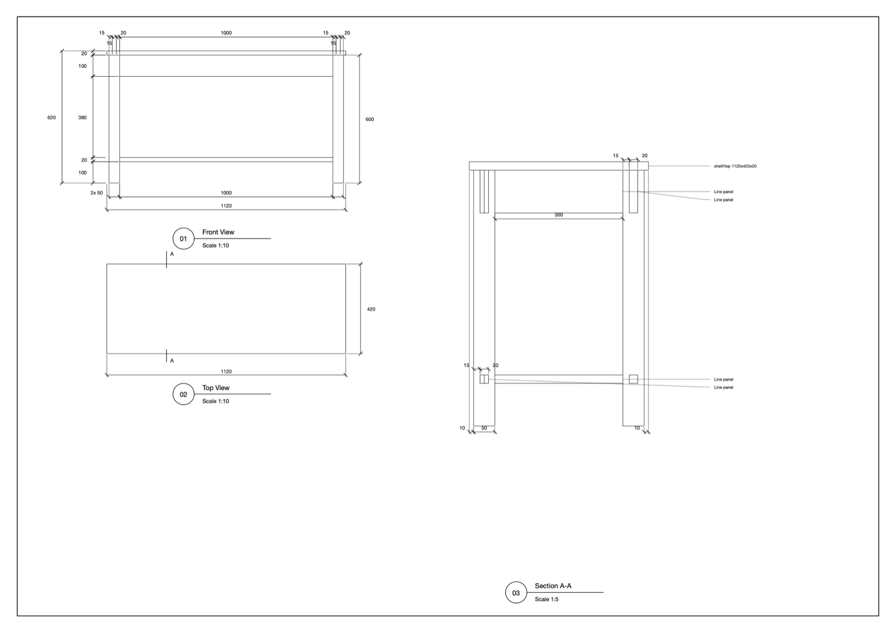
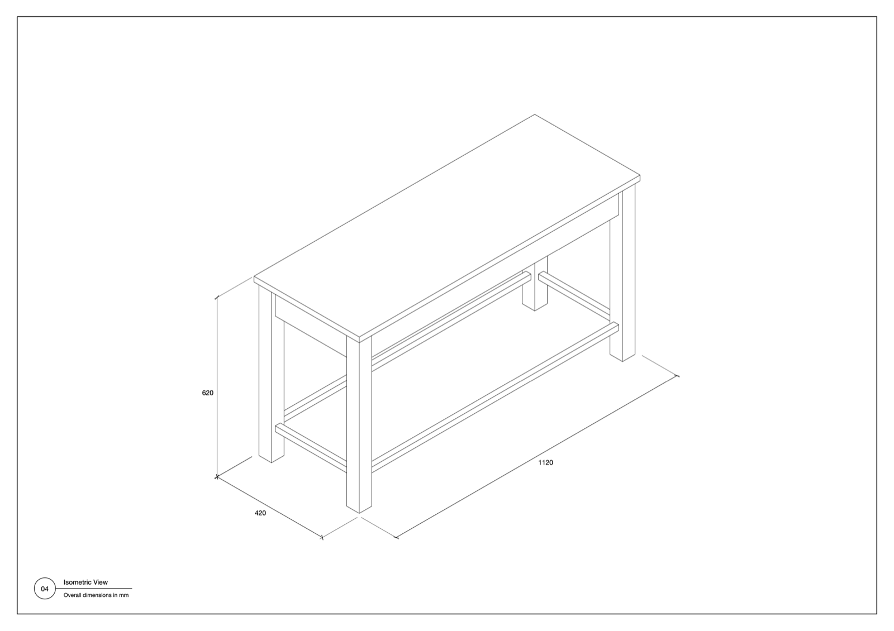

Quick Dimension
Read sizes on screen, or generate an A3 drawing from your selection.
Baca ukuran di layar, atau buat gambar A3 dari objek yang dipilih.
1. Install1. Instalasi
- Download the
.rbzfrom the main page. - SketchUp: Extensions › Extension Manager › Install Extension… and choose the file.
- Find it under Extensions › Quick Dimension, or show the toolbar in View › Toolbars.
- Unduh
.rbzdari halaman utama. - Di SketchUp: Extensions › Extension Manager › Install Extension… lalu pilih filenya.
- Buka lewat Extensions › Quick Dimension, atau tampilkan toolbar di View › Toolbars.
2. Live dimensions2. Dimensi langsung
Measure on screen without adding anything to the model.
Ukur di layar tanpa menambah apa pun ke model.
- Choose a mode from the toolbar: Overall, Object / Face or All.
- Click an object. Its dimensions appear on screen.
- In Object / Face mode, Option-click (Mac) or Ctrl-click (Windows) a face to measure just that face.
- Press Esc to clear the measurement. You stay in the tool, ready to measure again.
- Press Space to leave the tool and go back to Select.
- Pilih mode di toolbar: Overall, Object / Face, atau All.
- Klik objek. Ukurannya muncul di layar.
- Di mode Object / Face, Option-klik (Mac) atau Ctrl-klik (Windows) pada face untuk mengukur face itu saja.
- Tekan Esc untuk menghapus ukuran. Anda tetap di tool dan bisa langsung mengukur lagi.
- Tekan Spasi untuk keluar dari tool dan kembali ke Select.
Object / Face mode fades the rest of the model so the measured object stands out. Change this under Extensions › Quick Dimension › Object / Face: Other Objects.
Mode Object / Face memudarkan bagian lain agar objek yang diukur terlihat jelas. Ubah di Extensions › Quick Dimension › Object / Face: Other Objects.
3. Generate A3 Sheet3. Generate A3 Sheet
- Select the object you want to draw. Stay at the top level of the model, not inside an open group.
- Choose Extensions › Quick Dimension › Generate A3 Sheet, or click its toolbar button.
- If several objects are selected, choose One drawing per object or All as one drawing.
- Choose a folder.
- Wait a few seconds. A window called "QD temporary" opens and closes by itself. Then the folder opens with your files.
- Pilih objek yang ingin digambar. Tetap di level teratas model, bukan di dalam grup yang terbuka.
- Pilih Extensions › Quick Dimension › Generate A3 Sheet, atau klik tombolnya di toolbar.
- Jika beberapa objek dipilih, pilih One drawing per object atau All as one drawing.
- Pilih folder.
- Tunggu beberapa detik. Jendela bernama "QD temporary" terbuka lalu tertutup sendiri. Setelah itu folder terbuka berisi file Anda.
You get a .pdf ready to print and a .layout file you can edit. If nothing is selected, a message asks you to select something first.
Anda mendapat .pdf siap cetak dan file .layout yang bisa diedit. Jika tidak ada yang dipilih, muncul pesan yang meminta Anda memilih objek.
Generate A3 Sheet currently runs on macOS only.
Generate A3 Sheet saat ini hanya berjalan di macOS.
4. What is on the sheet4. Isi lembar


- Page 1: front view, top view and Section A-A, each with its scale. The A marks on the top view show where the section cuts.
- Page 2: a large isometric with overall width, depth and height.
- Chains: height zones on the left and widths along the bottom, with overall sizes on the outside.
- Section: depths sit beside each part, and part labels are on the right.
- Repeats: parts in an even row get one label, such as
3x 620. - Left undimensioned: parts under 25 mm, and products such as cans.
- Halaman 1: tampak depan, tampak atas, dan Potongan A-A, masing-masing dengan skalanya. Tanda A di tampak atas menunjukkan posisi potongan.
- Halaman 2: isometrik besar dengan lebar, kedalaman, dan tinggi keseluruhan.
- Rantai dimensi: zona tinggi di kiri dan lebar di bawah, dengan ukuran keseluruhan di bagian luar.
- Potongan: kedalaman berada di samping tiap bagian, dan label bagian di sebelah kanan.
- Pengulangan: bagian dalam deretan rata cukup satu label, misalnya
3x 620. - Tanpa dimensi: bagian di bawah 25 mm, dan produk seperti kaleng.
5. Long booths and angled objects5. Booth panjang dan objek miring
- Long booths: a unit much wider than it is tall gets a wide layout, with the front across the sheet and overall sizes and main widths only. For full detail, select the modules and choose One drawing per object.
- Objects at an angle: one selected object sitting at an angle is measured along its own axes, so the front is a true elevation.
- Units along the green axis: they are turned so the long side faces the front. Check that it shows the side you expect.
- Hidden tags: objects on a hidden tag are ignored, so switch on the tags you want first.
- Booth panjang: unit yang jauh lebih lebar daripada tingginya memakai tata letak lebar, dengan tampak depan selebar lembar dan hanya ukuran keseluruhan serta lebar utama. Untuk detail lengkap, pilih modul lalu pilih One drawing per object.
- Objek miring: satu objek terpilih yang posisinya miring diukur mengikuti sumbunya sendiri, sehingga tampak depannya benar.
- Unit searah sumbu hijau: diputar agar sisi panjang menghadap depan. Periksa apakah sisi yang tampil sudah sesuai.
- Tag tersembunyi: objek pada tag tersembunyi diabaikan, jadi nyalakan dulu tag yang diinginkan.
6. Uninstall6. Uninstall
Extensions › Extension Manager › select Quick Dimension › Uninstall.
Extensions › Extension Manager › pilih Quick Dimension › Uninstall.
Start here: for first-time usersMulai dari nol
Stuck installing or using this extension? This part explains the basics in plain words. If you are comfortable with SketchUp, you can skip it.
Kesulitan memasang atau memakai extension ini? Bagian ini menjelaskan dasar-dasarnya dengan bahasa sehari-hari. Kalau sudah terbiasa dengan SketchUp, bagian ini bisa dilewati.
What you are installingApa yang Anda pasang
An extension is a small add-on that gives SketchUp a new tool. It comes as one file ending in .rbz. You do not open or unzip that file yourself; SketchUp installs it for you. Quick Dimension is free.
Extension adalah program tambahan kecil yang menambah alat baru di SketchUp. Bentuknya satu file berakhiran .rbz. File itu tidak perlu dibuka atau diekstrak sendiri, karena SketchUp yang memasangnya. Quick Dimension gratis.
Install it, step by stepCara memasang, langkah demi langkah
- On the main page, press Download. The file usually lands in your Downloads folder.
- Open SketchUp. In the menu bar at the top, choose Extensions › Extension Manager.
- Press Install Extension…, find the
.rbzfile in your Downloads folder, and open it. - If SketchUp asks whether to install, choose Yes.
- Close SketchUp and open it again.
- Look in the Extensions menu. The name Quick Dimension should be there. That means it worked.
- Di halaman utama, tekan Unduh. File biasanya masuk ke folder Downloads (Unduhan).
- Buka SketchUp. Di menu bar paling atas, pilih Extensions › Extension Manager.
- Tekan Install Extension…, cari file
.rbztadi di folder Downloads, lalu buka. - Kalau SketchUp bertanya apakah mau memasang, pilih Yes.
- Tutup SketchUp, lalu buka lagi.
- Lihat menu Extensions. Nama Quick Dimension akan ada di sana. Artinya pemasangan berhasil.
Words you will meetIstilah yang akan Anda temui
| WordIstilah | What it meansArtinya |
|---|---|
| Group / Component | Faces and edges tied together as one object. To make one: select everything, right-click, then Make Group. Double-click it to go inside and change its contents, click an empty area to leave.Kumpulan face dan edge yang diikat menjadi satu benda. Untuk membuatnya: pilih semuanya, klik kanan, lalu Make Group. Klik dua kali benda itu untuk masuk dan mengubah isinya, klik di area kosong untuk keluar. |
| Toolbar | A row of icon buttons. If you cannot see it, open View › Toolbars and tick the extension name.Deretan tombol bergambar. Jika tidak terlihat, buka View › Toolbars dan centang nama extension-nya. |
| Undo | Cancels the last step. Press Cmd+Z on Mac or Ctrl+Z on Windows. Nothing is broken for good, so feel free to try.Membatalkan langkah terakhir. Tekan Cmd+Z di Mac atau Ctrl+Z di Windows. Tidak ada yang rusak permanen, jadi coba saja. |
Your first try (about 5 minutes)Percobaan pertama (sekitar 5 menit)
- Open a model that has one object, ideally already a group or component.
- Choose the Overall Dimension mode on the Quick Dimension toolbar, or through Extensions › Quick Dimension.
- Click the object. Its width, depth and height appear on screen. Nothing is added to the model.
- Press Esc to clear the measurement and measure another object.
- Done? Press Space to leave the tool and return to Select.
- Buka model yang berisi satu benda, sebaiknya sudah berupa grup atau komponen.
- Pilih mode Overall Dimension di toolbar Quick Dimension, atau lewat Extensions › Quick Dimension.
- Klik bendanya. Lebar, kedalaman, dan tinggi muncul di layar. Tidak ada yang ditambahkan ke model.
- Tekan Esc untuk menghapus ukuran dan mengukur benda lain.
- Selesai? Tekan Spasi untuk keluar dari alat dan kembali ke Select.
If something does not show upKalau ada yang tidak muncul
| ProblemMasalah | What to doYang bisa dicoba |
|---|---|
| The menu is not in Extensions.Menunya tidak ada di Extensions. | Close and reopen SketchUp. Then open Extensions › Extension Manager, go to the Manage tab and make sure Quick Dimension is switched on.Tutup lalu buka lagi SketchUp. Setelah itu buka Extensions › Extension Manager, masuk ke tab Manage, dan pastikan Quick Dimension dalam keadaan aktif. |
| I cannot see the toolbar.Toolbar tidak terlihat. | Open View › Toolbars and tick Quick Dimension.Buka View › Toolbars lalu centang Quick Dimension. |
| I press a button and nothing happens.Tombol ditekan tetapi tidak terjadi apa-apa. | Usually nothing is selected yet. Click the object first. Selected things turn blue.Biasanya belum ada yang dipilih. Klik objeknya dulu. Yang terpilih berwarna biru. |
| The result is not what I wanted.Hasilnya tidak sesuai harapan. | Press Undo once and try again with other numbers.Tekan Undo satu kali, lalu coba lagi dengan angka lain. |
Still stuck? Email andidewanto@gmail.com with your SketchUp version and a short description.
Masih bingung? Kirim email ke andidewanto@gmail.com dengan versi SketchUp Anda dan penjelasan singkat.